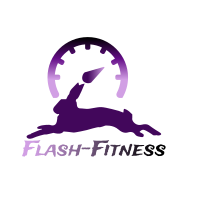

Flash-Fitness
"Get ready to Kick some Flash!"
Seated Chest Press
Video rights belong to 'Kent Leisure Training'

-
- Sit so feet are flat on floor, knees are above ankles, back is straight.
-
- Grip the handles near your chest, palms facing downward.
-
- EXHALE: Push the handles forward by straightening at the elbows.
-
- INHALE: Slowly bend the elbows to return to the start position, with hands near the chest, to complete one rep.
Muscles worked:
- - Pectoralis
- - Supporting chest
- - Arms & shoulders
- - Triceps